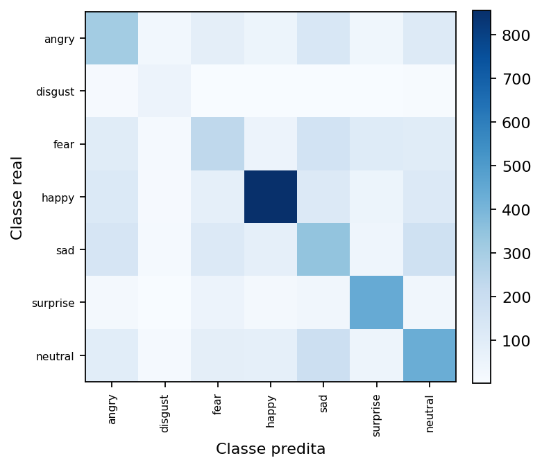
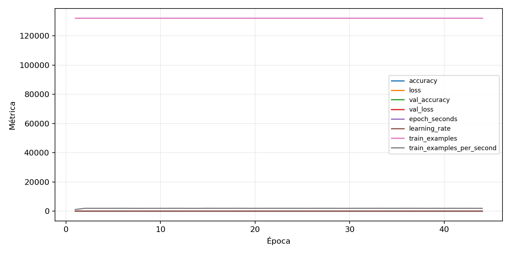

| n_samples | 5382 |
|---|---|
| loss | 1.331053376197815 |
| accuracy | 0.494611668524712 |
| balanced_accuracy | 0.5084772373891704 |
| macro_f1 | 0.4827824507453404 |


| Índice | Classe | Suporte | Precisão | Recall | F1 |
|---|---|---|---|---|---|
| 0 | angry | 743 | 0.38154613466334164 | 0.41184387617765816 | 0.3961165048543689 |
| 1 | disgust | 82 | 0.38235294117647056 | 0.6341463414634146 | 0.4770642201834862 |
| 2 | fear | 768 | 0.3579109062980031 | 0.3033854166666667 | 0.328400281888654 |
| 3 | happy | 1348 | 0.7581930912311781 | 0.6350148367952523 | 0.6911586596689544 |
| 4 | sad | 911 | 0.3532440782698249 | 0.3765093304061471 | 0.3645058448459086 |
| 5 | surprise | 600 | 0.6159217877094972 | 0.735 | 0.6702127659574468 |
| 6 | neutral | 930 | 0.44114636642784033 | 0.46344086021505376 | 0.45201887781856326 |
{"adapter":"fer2013","balance_mode":"oversample","class_names":["angry","disgust","fear","happy","sad","surprise","neutral"],"dataset":"fer2013","dataset_options":{},"dataset_root":"/home/msduda/datasets-tcc/fer2013","native_channels":1,"normalization":"zscore","num_classes":7,"protocol":{"checkpoint_monitor":"val_macro_f1","dtype_policy":"mixed_float16","early_stopping":{"patience":10,"restore_best_weights":true},"evaluation_augmentation":false,"input_channels":"native","optimizer":"Adam","pretrained_weights":false,"reduce_lr_on_plateau":{"factor":0.3,"min_lr":1e-07,"patience":4},"resize":"proportional_padding","test_time_augmentation":false,"training_from_scratch":true},"seed":42,"source_fingerprint":"3c69743206ae28880b6ca82a3a19b8d6c0ca0b7296b7ecc703aa8a76e40db6e0","source_manifest":{"class_names":["angry","disgust","fear","happy","sad","surprise","neutral"],"joined_samples":35887,"metadata":{"file":"/home/msduda/datasets-tcc/fer2013/fer2013.csv","layout":"fer2013-csv"},"name":"fer2013","native_channels":1,"source_path":"/home/msduda/datasets-tcc/fer2013","splits":{"test":3589,"train":28709,"validation":3589},"target_size":64},"target_size":64,"test_fraction":0.15,"train_fraction":0.7,"training":{"augmentation":{"brightness_delta":0.03,"contrast_lower":0.92,"contrast_upper":1.08,"cutout_max_frac":0.08,"cutout_prob":0.25,"flip_lr":true,"noise_std":0.005,"translate_frac":0.05,"zoom_max":1.04,"zoom_min":0.96},"batch_size":512,"default_image_size":64,"dtype_policy":"mixed_float16","early_stopping_patience":10,"extra_fraction":2.0,"image_size_overrides":{"gtsrb":128},"keras_verbose":1,"learning_rate":0.0003,"max_epochs":100,"preprocess_cache_max_mib":2048,"reduce_lr_factor":0.3,"reduce_lr_min_lr":1e-07,"reduce_lr_patience":4,"shuffle_buffer_max_mib":1024},"validation_fraction":0.15}
{"epochs_completed":44,"epochs_recorded":44,"evaluation_seconds":7.532313115996658,"fit_seconds_current_attempt":3090.242255297999,"max_epoch_seconds":114.41094887399231,"max_epochs":100,"mean_epoch_seconds":68.46504187361346,"mean_train_examples_per_second":1942.283901406331,"median_train_examples_per_second":1960.8651457596688,"min_epoch_seconds":66.43301732599502,"selected_checkpoint":"/mnt/e/tcc-benchmark/outputs/remaining-ram-capped/fer2013/runs/fer2013__zscore__oversample__seed-42/checkpoints/best.keras","total_seconds":3012.461842438992,"training_seconds":3012.461842438992,"wall_seconds_current_attempt":3119.563222594006}
{"elapsed_seconds":3119.6273886059935,"event_counts":{"data_preparation_end":1,"data_preparation_start":1,"epoch_end":44,"evaluation_end":1,"evaluation_start":1,"fit_end":1,"fit_start":1,"periodic":616,"run_completed":1,"train_start":1},"generated_at":"2026-08-02T11:36:17.766+00:00","gpu_backend":"pynvml","interval_seconds":5.0,"metrics":{"cpu_percent":{"count":668,"max":15.1,"mean":8.072604790419161,"min":0.0,"p50":8.3,"p95":8.5},"disk_data_free_bytes":{"count":668,"max":998258868224.0,"mean":998258868199.473,"min":998258860032.0,"p50":998258868224.0,"p95":998258868224.0},"disk_data_percent":{"count":668,"max":2.7,"mean":2.7,"min":2.7,"p50":2.7,"p95":2.7},"disk_data_total_bytes":{"count":668,"max":1081101176832.0,"mean":1081101176832.0,"min":1081101176832.0,"p50":1081101176832.0,"p95":1081101176832.0},"disk_data_used_bytes":{"count":668,"max":27849961472.0,"mean":27849953304.526947,"min":27849953280.0,"p50":27849953280.0,"p95":27849953280.0},"disk_output_free_bytes":{"count":668,"max":248486637568.0,"mean":248473936417.72455,"min":248472842240.0,"p50":248473145344.0,"p95":248473907200.0},"disk_output_percent":{"count":668,"max":75.2,"mean":75.2,"min":75.2,"p50":75.2,"p95":75.2},"disk_output_total_bytes":{"count":668,"max":1000186310656.0,"mean":1000186310656.0,"min":1000186310656.0,"p50":1000186310656.0,"p95":1000186310656.0},"disk_output_used_bytes":{"count":668,"max":751713468416.0,"mean":751712374238.2754,"min":751699673088.0,"p50":751713165312.0,"p95":751713401446.4},"elapsed_seconds":{"count":668,"max":3119.564439,"mean":1566.2540492020958,"min":0.026235,"p50":1567.0730105,"p95":2980.5307571999997},"gpu_count":{"count":668,"max":1.0,"mean":1.0,"min":1.0,"p50":1.0,"p95":1.0},"gpu_memory_percent":{"count":668,"max":54.19669151306152,"mean":54.14014148141096,"min":54.0921688079834,"p50":54.1409969329834,"p95":54.19516563415527},"gpu_memory_total_bytes":{"count":668,"max":8589934592.0,"mean":8589934592.0,"min":8589934592.0,"p50":8589934592.0,"p95":8589934592.0},"gpu_memory_used_bytes":{"count":668,"max":4655460352.0,"mean":4650602741.269461,"min":4646481920.0,"p50":4650676224.0,"p95":4655329280.0},"gpu_temperature_c":{"count":668,"max":58.0,"mean":53.949101796407184,"min":42.0,"p50":54.0,"p95":57.0},"gpu_utilization_percent":{"count":668,"max":74.0,"mean":33.33682634730539,"min":5.0,"p50":40.0,"p95":63.64999999999998},"process_cpu_percent":{"count":668,"max":190.0,"mean":97.99745508982036,"min":0.0,"p50":101.3,"p95":103.7},"process_read_bytes":{"count":668,"max":318799872.0,"mean":318743325.1257485,"min":317497344.0,"p50":318799872.0,"p95":318799872.0},"process_rss_bytes":{"count":668,"max":3848736768.0,"mean":3732561993.580838,"min":2825101312.0,"p50":3759071232.0,"p95":3770528153.6},"process_vms_bytes":{"count":668,"max":48410255360.0,"mean":48303055056.47904,"min":47254691840.0,"p50":48328245248.0,"p95":48329089024.0},"process_write_bytes":{"count":668,"max":1241088.0,"mean":1241088.0,"min":1241088.0,"p50":1241088.0,"p95":1241088.0},"ram_available_bytes":{"count":668,"max":13812506624.0,"mean":12909952410.826347,"min":12792819712.0,"p50":12890865664.0,"p95":12947973529.6},"ram_percent":{"count":668,"max":23.0,"mean":22.321407185628743,"min":16.9,"p50":22.4,"p95":22.6},"ram_total_bytes":{"count":668,"max":16619089920.0,"mean":16619089920.0,"min":16619089920.0,"p50":16619089920.0,"p95":16619089920.0},"ram_used_bytes":{"count":668,"max":3826270208.0,"mean":3709137509.1736526,"min":2806583296.0,"p50":3728224256.0,"p95":3751359283.2}},"sample_count":668,"schema_version":1}